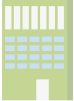

What do data about previous jobs from top-companies engineers show us?

30 months
Is the average time on past experience,
The average of all past experiences is 25 months.
The average of all past experiences is 25 months.

4.6 companies
Is the average number of past experiences,
only 14% has less than 3 experiences
and 50% has more than 5 experiences.
only 14% has less than 3 experiences
and 50% has more than 5 experiences.
18% worked at Google or Microsoft.
These are the most common background among top-company professionals.
 Companies that top-companies engineers doesn't stay for too long...
Companies that top-companies engineers doesn't stay for too long...
average months
#1
15
#2
16
#3
17
#4
17
#5
18
average months
excluding the first 2 years
excluding the first 2 years

35
35
37
38
40
Excluding the first 2 years from the average show us companies where top-company engineers don't leave too early but don't stay for much longer as well.
% of top-company engineers departures before 1 year
54%
48%
46%
44%
Companies which top-company engineers stays more
average months
#1
41
#2
40
#3
34
#4
33
#5
33
average excluding more than 60 months
-
31
29
27
-
25
24
The total average is inflated by engineers which stayed almost a decade on the company, removing them we have a better average.
% of top-company engineers which stayed more than 60 months
26%
23%
21%
19%
Average years working on past companies
Top-company engineers stay 50% more in the first 2 years at top-companies, in addition, they also stay longer in the long term compared to non-top companies.
Distribution of the time working on past companies
Although engineers are known for not staying much longer in a company, they stay more and more at each new job.